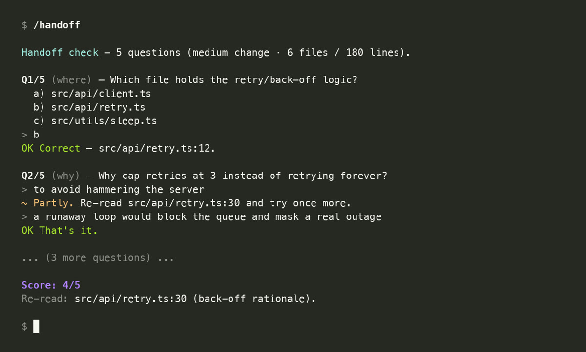
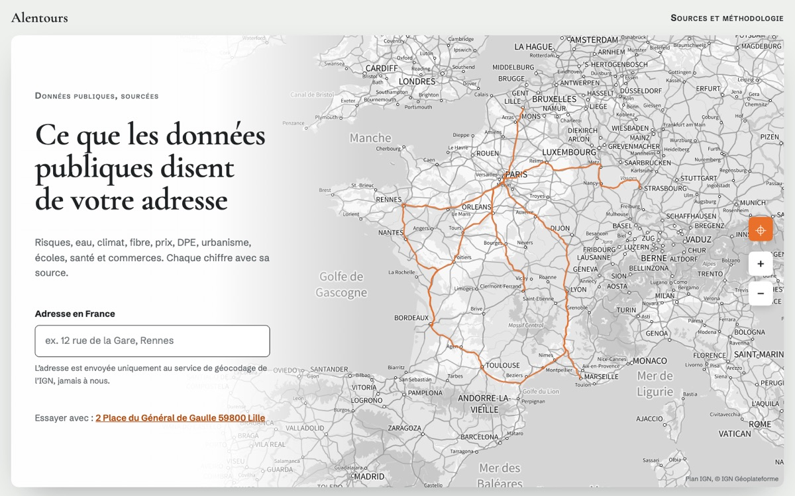
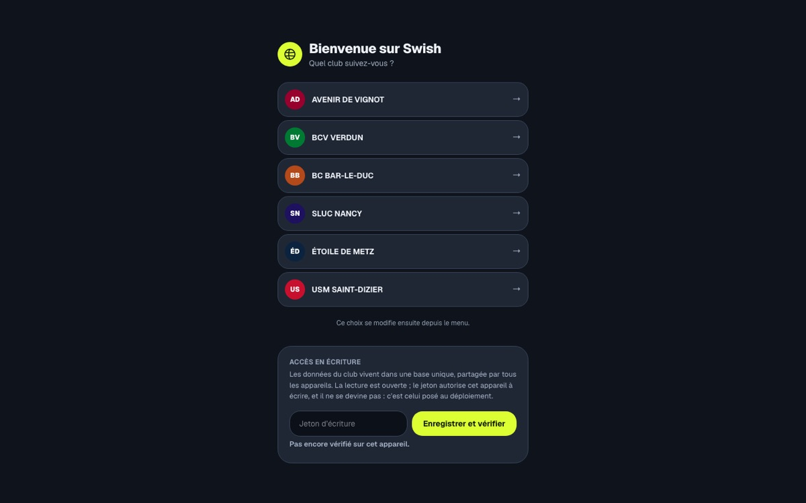
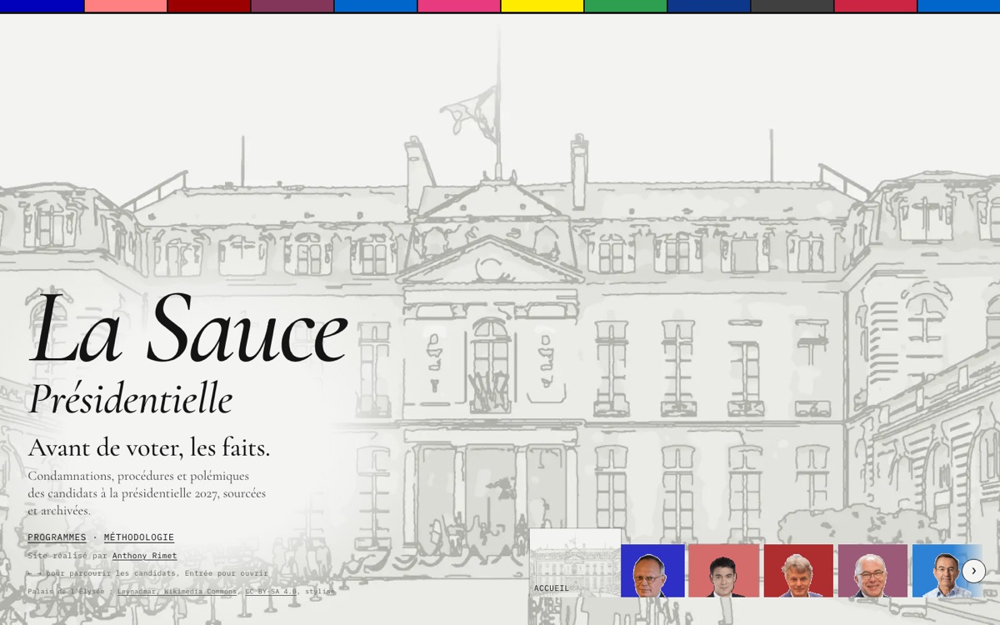
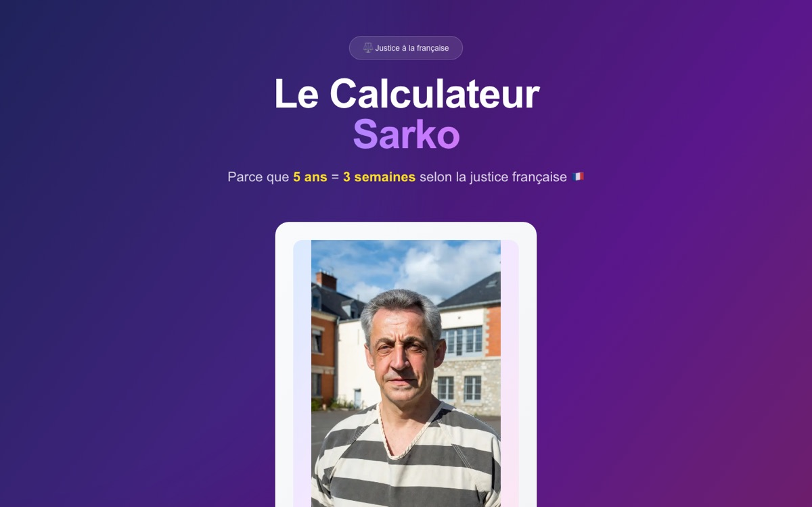
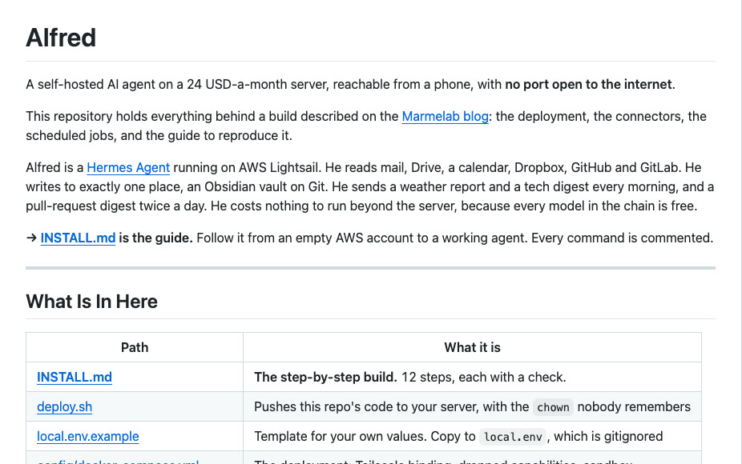

About
Passionate about web development for over 9 years, I am committed to continuous learning. I love challenging myself to achieve my goals.
New technologies and teamwork are a continuous source of motivation for me. Specialized in full-stack JavaScript, I work on various projects with React, Node.js, and PostgreSQL.
I also work well with AI, both building LLM-powered features into products and using AI coding agents every day to ship faster.
Work
-
Senior Software Engineer Marmelab
Development of complex applications for various clients:
- MitsubishiInternal banking loan management application
- Arte GIEMaintenance and evolution of 4 critical applications publishing arte.tv
- Coutot-RoehrigComplete overhaul of genealogical search tools
- Le Nouvel ObservateurDesign system and article pages, with GreenFrame analysis to reduce carbon footprint
- NanoteraPromotion broadcasting applications
- SayensAMOS, measuring cognitive bias through psychometric tests
- Orange Business ServicesEvolution of the MyPlace smart city application
- LODEXOpen-source tool for CNRS documentalists to publish structured data on the semantic web
- Hospices Civils de LyonCustomized Lodex instance
- WorkflowersSecure multi-tenant API for Carbon Pilot
- Transports publics de LausanneIV Manager for passenger information terminals
- Amnesty InternationalMobile activism application for human rights
-
Software Engineer AtoutBio
Graphical tracking of laboratory statistics with rights management. Continuous migration between two GIS systems (Odancio, Kalisil) through dedicated APIs.
Angular, Express, Node.js
-
Front-end Engineer SmartFizz
Menu management interface and touch-screen ordering kiosk for restaurants. Connectors for POS peripherals: printer, cash register, scanner, payment.
Angular, Express, Node.js, Electron, Vue.js
-
Software Engineer Neo-Nomade
Mobile application mirroring the Neo-Nomade website. PHP API and front/back modules.
React Native, PHP, Solr, Angular.js
Side projects
-
Il y a 100 ans
The front pages of six French dailies printed exactly 100 years ago today, straight from the BnF archives.
-

handoff
A Claude Code skill that quizzes you on the code Claude wrote, so you never merge what you can't explain.
Claude Code skill, 27 stars -

Alentours
What public data says about any address in France, with the source of every figure.
-

Swish
An offline-first scorer's table for basketball: live score, clock, fouls, stats and PDF match sheets.
-

La Sauce présidentielle
Before voting, the facts: sourced records, controversies and programs of the 2027 French presidential candidates.
-

Le Calculateur Sarko
A satirical calculator that converts any duration with the "Sarko ratio": 5 years equals 3 weeks.
-

Alfred
A self-hosted AI agent I reach from my phone, with no port open to the internet and only free models.
Hermes Agent, MCP, Python